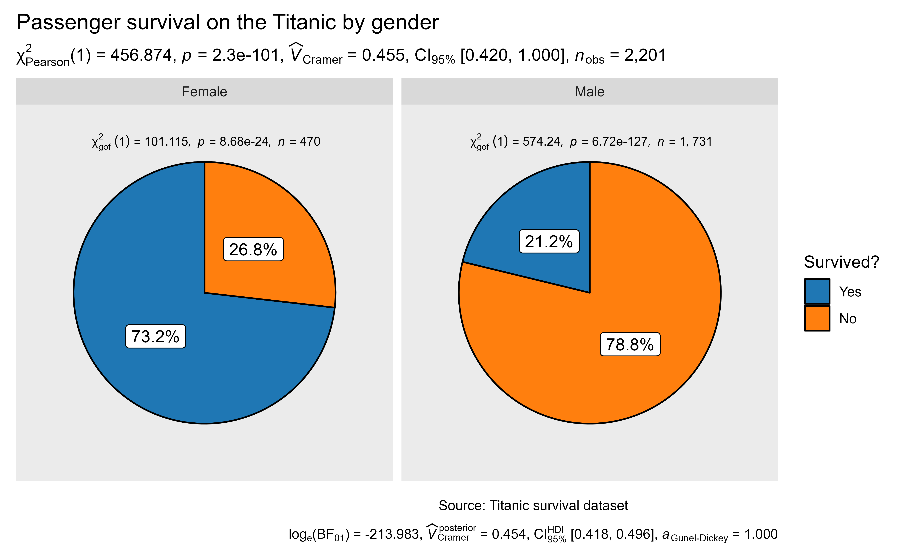

Introduction to ggpiestats
The function ggstatsplot::ggpiestats can be used for quick data exploration and/or to prepare publication-ready pie charts to summarize the statistical relationship(s) among one or more categorical variables. We will see examples of how to use this function in this vignette.
To begin with, here are some instances where you would want to use ggpiestats-
to check if the proportion of observations matches our hypothesized proportion, this is typically known as a “Goodness of Fit” test
to see if the frequency distribution of two categorical variables are independent of each other using the contingency table analysis
to check if the proportion of observations at each level of a categorical variable is equal
Note: The following demo uses the pipe operator (%>%), if you are not familiar with this operator, here is a good explanation: http://r4ds.had.co.nz/pipes.html.
ggpiestats works only with data organized in dataframes or tibbles. It will not work with other data structures like base-R tables or matrices. It can operate on dataframes that are organized with one row per observation or dataframes that have one column containing counts. This vignette provides examples of both (see examples below).
To help demonstrate how ggpiestats can be used with categorical (also known as nominal) data, a modified version of the original Titanic dataset (from the datasets library) has been provided in the ggstatsplot package with the name Titanic_full. The Titanic Passenger Survival Dataset provides information “on the fate of passengers on the fatal maiden voyage of the ocean liner Titanic, including economic status (class), sex, age, and survival.”
Let’s have a look at the structure of both.
library(datasets)
library(dplyr)
library(ggstatsplot)
# looking at the original data in tabular format
dplyr::glimpse(x = Titanic)
#> 'table' num [1:4, 1:2, 1:2, 1:2] 0 0 35 0 0 0 17 0 118 154 ...
#> - attr(*, "dimnames")=List of 4
#> ..$ Class : chr [1:4] "1st" "2nd" "3rd" "Crew"
#> ..$ Sex : chr [1:2] "Male" "Female"
#> ..$ Age : chr [1:2] "Child" "Adult"
#> ..$ Survived: chr [1:2] "No" "Yes"
# looking at the dataset as a tibble or dataframe
dplyr::glimpse(x = ggstatsplot::Titanic_full)
#> Observations: 2,201
#> Variables: 5
#> $ id <dbl> 1, 2, 3, 4, 5, 6, 7, 8, 9, 10, 11, 12, 13, 14, 15, 16, 17,...
#> $ Class <fct> 3rd, 3rd, 3rd, 3rd, 3rd, 3rd, 3rd, 3rd, 3rd, 3rd, 3rd, 3rd...
#> $ Sex <fct> Male, Male, Male, Male, Male, Male, Male, Male, Male, Male...
#> $ Age <fct> Child, Child, Child, Child, Child, Child, Child, Child, Ch...
#> $ Survived <fct> No, No, No, No, No, No, No, No, No, No, No, No, No, No, No...
Goodness of Fit with ggpiestats
The simplest use case for ggpiestats is that we want to display information about one categorical or nominal variable. As part of that display or plot, we may also choose to execute a chi-squared goodness of fit test to see whether the proportions (or percentages) in categories of the single variable appear to line up with our hypothesis or model. To start simple and then expand, let’s say that we’d like to display a piechart with the percentages of passengers who did or did not survive. Our initial hypothesis is that it was no different than flipping a coin. People had a 50/50 chance of surviving.
# since effect size confidence intervals are computed using bootstrapping, let's
# set seed for reproducibility
set.seed(123)
# to speed up the process, let's use only half of the dataset
Titanic_full_50 <- dplyr::sample_frac(tbl = ggstatsplot::Titanic_full, size = 0.5)
# plot
ggstatsplot::ggpiestats(
data = Titanic_full_50,
x = Survived,
title = "Passenger survival on the Titanic", # title for the entire plot
caption = "Source: Titanic survival dataset", # caption for the entire plot
legend.title = "Survived?", # legend title
messages = FALSE # turn off messages
)Note: equal proportions per category are the default, e.g. 50/50, but you can specify any hypothesized ratio you like with ratio so if our hypothesis was that 80% died and 20% survived we would add ratio = c(.80,.20) when we entered the code.
Let’s move on to a more complex example statistically and in terms of the features we will use in ggpiestats
Independence (or association) with ggpiestats
Let’s next investigate whether the passenger’s gender was independent of, or associated with, gender. The test is whether the proportion of people who survived was different between the sexes using ggpiestats.
We’ll modify a number of arguments to change the appearance of this plot and showcase the flexibility of ggpiestats. We will:
Change the plot theme to
ggplot2::theme_grey()Change our color palette to
category10_d3fromggscipackageWe’ll customize the subtitle by being more precise about which chi squared test this is
stat.title = "chi squared test of independence: "Finally, we’ll make a call to
ggplot2to modify the size of our plot title and to make it right justified
# since effect size confidence intervals are computed using bootstrapping, let's
# set seed for reproducibility
set.seed(123)
# to speed up the process, let's use only half of the dataset
Titanic_full_50 <- dplyr::sample_frac(tbl = ggstatsplot::Titanic_full, size = 0.5)
# plot
ggstatsplot::ggpiestats(
data = Titanic_full_50,
x = Survived,
y = Sex,
title = "Passenger survival on the Titanic by gender", # title for the entire plot
caption = "Source: Titanic survival dataset", # caption for the entire plot
legend.title = "Survived?", # legend title
bf.message = TRUE, # display bayes factor in favor of null hypothesis
ggtheme = ggplot2::theme_grey(), # changing plot theme
palette = "category10_d3", # choosing a different color palette
package = "ggsci", # package to which color palette belongs
stat.title = "Association test: ", # title for statistical test
k = 3, # decimal places in result
perc.k = 1, # decimal places in percentage labels
nboot = 10, # no. of bootstrap sample for effect size CI
messages = FALSE
) + # further modification with `ggplot2` commands
ggplot2::theme(
plot.title = ggplot2::element_text(
color = "black",
size = 14,
hjust = 0
)
)
The plot clearly shows that survival rates were very different between males and females. The Pearson’s \(\chi^2\)-test of independence is significant given our large sample size. Additionally, for both females and males, the survival rates were significantly different than 50% as indicated by the *** which is equivalent to a goodness of fit test for each gender.
Grouped analysis with grouped_ggpiestats
What if we want to do the same analysis of gender but also factor in the passenger’s age (Age)? We have information that classifies the passengers as Child or Adult, perhaps that makes a difference to their survival rate?
ggstatsplot provides a special helper function for such instances: grouped_ggpiestats. It is a convenient wrapper function around ggstatsplot::combine_plots. It applies ggpiestats across all levels of a specified grouping variable and then combines the list of individual plots into a single plot. Note that the grouping variable can be anything: conditions in a given study, groups in a study sample, different studies, etc.
# since effect size confidence intervals are computed using bootstrapping, let's
# set seed for reproducibility
set.seed(123)
# plot
ggstatsplot::grouped_ggpiestats(
# arguments relevant for ggstatsplot::gghistostats
data = ggstatsplot::Titanic_full,
x = Survived,
y = Sex,
grouping.var = Age,
title.prefix = "Child or Adult?",
nboot = 10,
perc.k = 1,
package = "ggsci",
palette = "category10_d3",
messages = FALSE,
# arguments relevant for ggstatsplot::combine_plots
title.text = "Passenger survival on the Titanic by gender and age",
caption.text = "Asterisks denote results from proportion tests; \n***: p < 0.001, ns: non-significant",
plotgrid.args = list(nrow = 2)
)
The resulting pie charts and statistics make the story clear. For adults gender very much matters. Women survived at much higher rates than men. For children gender is not significantly associated with survival and both male and female children have a survival rate that is not significantly different from 50/50.
Grouped analysis with ggpiestats + purrr
Although grouped_ggpiestats provides a quick way to explore the data, it leaves much to be desired. For example, we may want to add different captions, titles, themes, or palettes for each level of the grouping variable, etc. For cases like these, it would be better to use purrr package.
See the associated vignette here: https://indrajeetpatil.github.io/ggstatsplot/articles/web_only/purrr_examples.html
Working with data organized by counts
ggpiestats can also work with dataframe containing counts (aka tabled data), i.e., when each row doesn’t correspond to a unique observation. For example, consider the following notional fishing dataframe containing data from two boats (A and B) about the number of different types fish they caught in the months of February and March. In this dataframe, each row corresponds to a unique combination of Boat and Month.
# for reproducibility
set.seed(123)
# creating a dataframe
# (this is completely fictional; I don't know first thing about fishing!)
(
fishing <- data.frame(
Boat = c(rep("B", 4), rep("A", 4), rep("A", 4), rep("B", 4)),
Month = c(rep("February", 2), rep("March", 2), rep("February", 2), rep("March", 2)),
Fish = c(
"Bass",
"Catfish",
"Cod",
"Haddock",
"Cod",
"Haddock",
"Bass",
"Catfish",
"Bass",
"Catfish",
"Cod",
"Haddock",
"Cod",
"Haddock",
"Bass",
"Catfish"
),
SumOfCaught = c(25, 20, 35, 40, 40, 25, 30, 42, 40, 30, 33, 26, 100, 30, 20, 20)
) %>% # converting to a tibble dataframe
tibble::as_data_frame(x = .)
)
#> # A tibble: 16 x 4
#> Boat Month Fish SumOfCaught
#> <fct> <fct> <fct> <dbl>
#> 1 B February Bass 25
#> 2 B February Catfish 20
#> 3 B March Cod 35
#> 4 B March Haddock 40
#> 5 A February Cod 40
#> 6 A February Haddock 25
#> 7 A March Bass 30
#> 8 A March Catfish 42
#> 9 A February Bass 40
#> 10 A February Catfish 30
#> 11 A March Cod 33
#> 12 A March Haddock 26
#> 13 B February Cod 100
#> 14 B February Haddock 30
#> 15 B March Bass 20
#> 16 B March Catfish 20When the data is organized this way, we make a slightly different call to the ggpiestats function: we use the counts argument. If we want to investigate the relationship of type of fish by month (a test of independence), our command would be:
# running `ggpiestats` with counts information
ggstatsplot::ggpiestats(
data = fishing,
x = Fish,
y = Month,
counts = SumOfCaught,
slice.label = "both",
package = "ggsci",
palette = "default_jama",
title = "Type fish caught by month",
caption = "Source: completely made up",
legend.title = "Type fish caught: ",
messages = FALSE
)
The results support our hypothesis that the type of fish caught is related to the month in which we’re fishing. The \(\chi^2\) independence test results at the top of the plot. In February we catch significantly more Haddock than we would hypothesize for an equal distribution. Whereas in March our results indicate there’s no strong evidence that the distribution isn’t equal.
Within-subjects designs
For our final example let’s imagine we’re conducting clinical trials for some new imaginary wonder drug. We have 134 subjects entering the trial. Some of them enter healthy (n = 96), some of them enter the trial already being sick (n = 38). All of them receive our treatment or intervention. Then we check back in a month to see if they are healthy or sick. A classic pre/post experimental design. We’re interested in seeing the change in both groupings. In the case of within-subjects designs, you can set paired = TRUE, which will display results from McNemar test in the subtitle.
(Note: If you forget to set paired = TRUE, the results you get will be inaccurate.)
# seed for reproducibility
set.seed(123)
# create our imaginary data
clinical_trial <-
tibble::tribble(
~SickBefore, ~SickAfter, ~Counts,
"No", "Yes", 4,
"Yes", "No", 25,
"Yes", "Yes", 13,
"No", "No", 92
)
# plot
ggstatsplot::ggpiestats(
data = clinical_trial,
x = SickAfter,
y = SickBefore,
counts = Counts,
paired = TRUE,
slice.label = "both",
title = "Results from imaginary clinical trial",
package = "ggsci",
palette = "default_ucscgb",
direction = -1,
messages = FALSE
)
The results bode well for our experimental wonder drug. Of the 96 who started out healthy only 4% were sick after a month. Ideally, we would have hoped for zero but reality is seldom perfect. On the other side of the 38 who started out sick that number has reduced to just 13 or 34% which is a marked improvement.
Summary of tests
Following tests are carried out for each type of analyses-
| Type of data | Design | Test |
|---|---|---|
| Unpaired | \(n \times p\) contingency table | Pearson’s \(\chi^2\) test |
| Paired | \(n \times p\) contingency table | McNemar’s \(\chi^2\) test |
| Frequency | \(n \times 1\) contingency table | Goodness of fit (\(\chi^2\) test) |
Following effect sizes (and confidence intervals/CI) are available for each type of test-
| Type | Effect size | CI? |
|---|---|---|
| Pearson’s \(\chi^2\) test | Cramer’s \(V\) | Yes |
| McNemar’s test | Cohen’s \(g\) | Yes |
| Goodness of fit | Cramer’s \(V\) | Yes |
Effect size interpretation
To see how the effect sizes displayed in these tests can be interpreted, see: https://indrajeetpatil.github.io/ggstatsplot/articles/web_only/effsize_interpretation.html
Suggestions
If you find any bugs or have any suggestions/remarks, please file an issue on GitHub: https://github.com/IndrajeetPatil/ggstatsplot/issues
Session Information
For details, see- https://indrajeetpatil.github.io/ggstatsplot/articles/web_only/session_info.html